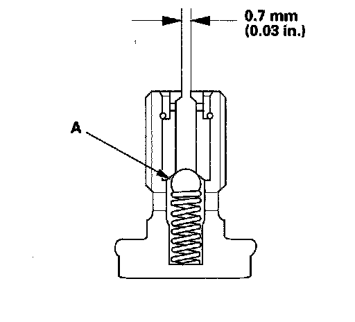

Oil Spray Jet: Testing and Inspection
Oil Jet Bolt Inspection1. Remove the oil jet bolt.
2. Inspect the oil jet bolt as follows.
^ Make sure that a 0.6 mm (0.02 in.) diameter drill will go through the oil intake (0.7 mm [0.03 in.] diameter). Make sure the check ball (A) moves smoothly and has a stroke of about 4.0 mm (0.16 in.)
^ Check the oil jet bolt operation with an air nozzle. It should take at least 120 kPa (1.2 kgf/cm, 17 psi) to unseat the check ball.
